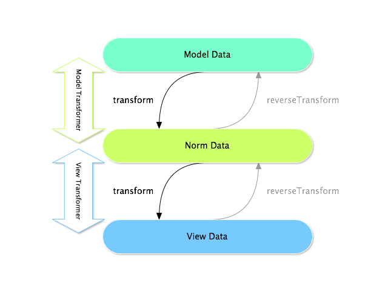

How to Use Data Transformers¶
You’ll often find the need to transform the data the user entered in a form into something else for use in your program. You could easily do this manually in your controller, but what if you want to use this specific form in different places?
Say you have a one-to-one relation of Task to Issue, e.g. a Task optionally has an issue linked to it. Adding a listbox with all possible issues can eventually lead to a really long listbox in which it is impossible to find something. You might want to add a textbox instead, where the user can simply enter the issue number.
You could try to do this in your controller, but it’s not the best solution. It would be better if this issue were automatically converted to an Issue object. This is where Data Transformers come into play.
警告
When a form field has the inherit_data option set, Data Transformers
won’t be applied to that field.
Creating the Transformer¶
First, create an IssueToNumberTransformer class - this class will be responsible
for converting to and from the issue number and the Issue object:
// src/Acme/TaskBundle/Form/DataTransformer/IssueToNumberTransformer.php
namespace Acme\TaskBundle\Form\DataTransformer;
use Symfony\Component\Form\DataTransformerInterface;
use Symfony\Component\Form\Exception\TransformationFailedException;
use Doctrine\Common\Persistence\ObjectManager;
use Acme\TaskBundle\Entity\Issue;
class IssueToNumberTransformer implements DataTransformerInterface
{
/**
* @var ObjectManager
*/
private $om;
/**
* @param ObjectManager $om
*/
public function __construct(ObjectManager $om)
{
$this->om = $om;
}
/**
* Transforms an object (issue) to a string (number).
*
* @param Issue|null $issue
* @return string
*/
public function transform($issue)
{
if (null === $issue) {
return "";
}
return $issue->getNumber();
}
/**
* Transforms a string (number) to an object (issue).
*
* @param string $number
*
* @return Issue|null
*
* @throws TransformationFailedException if object (issue) is not found.
*/
public function reverseTransform($number)
{
if (!$number) {
return null;
}
$issue = $this->om
->getRepository('AcmeTaskBundle:Issue')
->findOneBy(array('number' => $number))
;
if (null === $issue) {
throw new TransformationFailedException(sprintf(
'An issue with number "%s" does not exist!',
$number
));
}
return $issue;
}
}
小技巧
If you want a new issue to be created when an unknown number is entered, you
can instantiate it rather than throwing the TransformationFailedException.
注解
When null is passed to the transform() method, your transformer
should return an equivalent value of the type it is transforming to (e.g.
an empty string, 0 for integers or 0.0 for floats).
Using the Transformer¶
Now that you have the transformer built, you just need to add it to your issue field in some form.
You can also use transformers without creating a new custom form type
by calling addModelTransformer (or addViewTransformer - see
Model and View Transformers) on any field builder:
use Acme\TaskBundle\Form\DataTransformer\IssueToNumberTransformer;
use Symfony\Component\Form\FormBuilderInterface;
use Symfony\Component\OptionsResolver\OptionsResolver;
class TaskType extends AbstractType
{
public function buildForm(FormBuilderInterface $builder, array $options)
{
// ...
// the "em" is an option that you pass when creating your form. Check out
// the 3rd argument to createForm in the next code block to see how this
// is passed to the form (also see setDefaultOptions).
$entityManager = $options['em'];
$transformer = new IssueToNumberTransformer($entityManager);
// add a normal text field, but add your transformer to it
$builder->add(
$builder->create('issue', 'text')
->addModelTransformer($transformer)
);
}
public function configureOptions(OptionsResolver $resolver)
{
$resolver
->setDefaults(array(
'data_class' => 'Acme\TaskBundle\Entity\Task',
))
->setRequired(array('em'))
->setAllowedTypes('em', 'Doctrine\Common\Persistence\ObjectManager')
// ...
}
// ...
}
This example requires that you pass in the entity manager as an option
when creating your form. Later, you’ll learn how you could create a custom
issue field type to avoid needing to do this in your controller:
$taskForm = $this->createForm(new TaskType(), $task, array(
'em' => $this->getDoctrine()->getManager(),
));
Cool, you’re done! Your user will be able to enter an issue number into the
text field and it will be transformed back into an Issue object. This means
that, after a successful submission, the Form framework will pass a real Issue
object to Task::setIssue() instead of the issue number.
If the issue isn’t found, a form error will be created for that field and
its error message can be controlled with the invalid_message field option.
警告
Notice that adding a transformer requires using a slightly more complicated syntax when adding the field. The following is wrong, as the transformer would be applied to the entire form, instead of just this field:
// THIS IS WRONG - TRANSFORMER WILL BE APPLIED TO THE ENTIRE FORM
// see above example for correct code
$builder->add('issue', 'text')
->addModelTransformer($transformer);
Model and View Transformers¶
In the above example, the transformer was used as a “model” transformer. In fact, there are two different types of transformers and three different types of underlying data.
In any form, the three different types of data are:
- Model data - This is the data in the format used in your application
(e.g. an
Issueobject). If you callForm::getDataorForm::setData, you’re dealing with the “model” data. - Norm Data - This is a normalized version of your data, and is commonly the same as your “model” data (though not in our example). It’s not commonly used directly.
- View Data - This is the format that’s used to fill in the form fields
themselves. It’s also the format in which the user will submit the data. When
you call
Form::submit($data), the$datais in the “view” data format.
The two different types of transformers help convert to and from each of these types of data:
- Model transformers:
transform: “model data” => “norm data”reverseTransform: “norm data” => “model data”
- View transformers:
transform: “norm data” => “view data”reverseTransform: “view data” => “norm data”
Which transformer you need depends on your situation.
To use the view transformer, call addViewTransformer.
So why Use the Model Transformer?¶
In this example, the field is a text field, and a text field is always
expected to be a simple, scalar format in the “norm” and “view” formats. For
this reason, the most appropriate transformer was the “model” transformer
(which converts to/from the norm format - string issue number - to the model
format - Issue object).
The difference between the transformers is subtle and you should always think
about what the “norm” data for a field should really be. For example, the
“norm” data for a text field is a string, but is a DateTime object
for a date field.
Using Transformers in a custom Field Type¶
In the above example, you applied the transformer to a normal text field.
This was easy, but has two downsides:
1) You need to always remember to apply the transformer whenever you’re adding a field for issue numbers.
2) You need to worry about passing in the em option whenever you’re creating
a form that uses the transformer.
Because of these, you may choose to create a custom field type. First, create the custom field type class:
// src/Acme/TaskBundle/Form/Type/IssueSelectorType.php
namespace Acme\TaskBundle\Form\Type;
use Symfony\Component\Form\AbstractType;
use Symfony\Component\Form\FormBuilderInterface;
use Acme\TaskBundle\Form\DataTransformer\IssueToNumberTransformer;
use Doctrine\Common\Persistence\ObjectManager;
use Symfony\Component\OptionsResolver\OptionsResolver;
class IssueSelectorType extends AbstractType
{
/**
* @var ObjectManager
*/
private $om;
/**
* @param ObjectManager $om
*/
public function __construct(ObjectManager $om)
{
$this->om = $om;
}
public function buildForm(FormBuilderInterface $builder, array $options)
{
$transformer = new IssueToNumberTransformer($this->om);
$builder->addModelTransformer($transformer);
}
public function configureOptions(OptionsResolverInterface $resolver)
{
$resolver->setDefaults(array(
'invalid_message' => 'The selected issue does not exist',
));
}
public function getParent()
{
return 'text';
}
public function getName()
{
return 'issue_selector';
}
}
Next, register your type as a service and tag it with form.type so that
it’s recognized as a custom field type:
- YAML
services: acme_demo.type.issue_selector: class: Acme\TaskBundle\Form\Type\IssueSelectorType arguments: ["@doctrine.orm.entity_manager"] tags: - { name: form.type, alias: issue_selector }
- XML
<service id="acme_demo.type.issue_selector" class="Acme\TaskBundle\Form\Type\IssueSelectorType"> <argument type="service" id="doctrine.orm.entity_manager"/> <tag name="form.type" alias="issue_selector" /> </service>
- PHP
$container ->setDefinition('acme_demo.type.issue_selector', array( new Reference('doctrine.orm.entity_manager'), )) ->addTag('form.type', array( 'alias' => 'issue_selector', )) ;
Now, whenever you need to use your special issue_selector field type,
it’s quite easy:
// src/Acme/TaskBundle/Form/Type/TaskType.php
namespace Acme\TaskBundle\Form\Type;
use Symfony\Component\Form\AbstractType;
use Symfony\Component\Form\FormBuilderInterface;
class TaskType extends AbstractType
{
public function buildForm(FormBuilderInterface $builder, array $options)
{
$builder
->add('task')
->add('dueDate', null, array('widget' => 'single_text'))
->add('issue', 'issue_selector');
}
public function getName()
{
return 'task';
}
}